Phishing links and why a model trained once goes stale (concept drift).
URL-only features + a model that watches for drift and updates itself.
Step by step: features → LASSO + MI → SGD-SVM → KS drift test → online loop.
Our Python implementation, data we used, experiments we ran.
What reproduced, what did not, and an honest look at why.
Attackers send millions of such links by email, SMS and social media. Blocklists are always one step behind a brand-new link — so we need a model that can judge a link it has never seen.
| Page-content methods | URL-only (this paper) | |
|---|---|---|
| Needs | download + render the page | just the text of the URL |
| Speed | slow | instant |
| Privacy | reads page content | no page content read |
| Safety | touches the malicious site | never visits it |
The statistics of the data change over time. Phishers keep changing how their URLs look — shorter hostnames, more random characters, fewer bait words like “free” or “secure”.
A model learned from yesterday’s URLs makes more and more mistakes on today’s. In our data 34 of 58 features measurably shifted between old and new phishing URLs.
Retrain from scratch on all data each time: about 4 seconds on 210k URLs in our runs, vs. 1.5 ms for an incremental update.
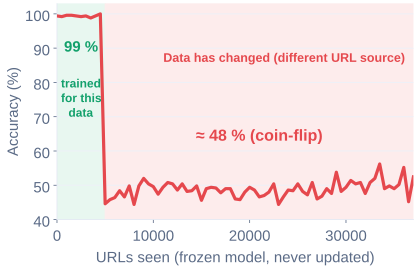
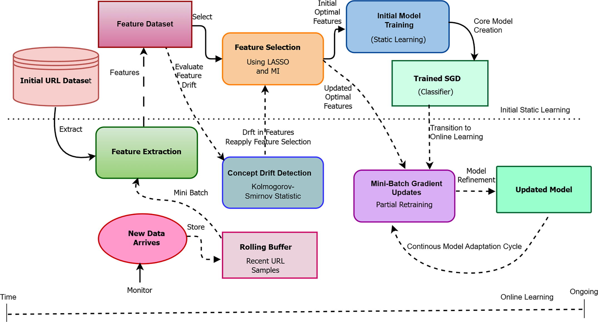
Out of dozens of URL features, keep only the most informative quarter. Re-pick when things change.
Compare each feature’s distribution in new URLs vs. recent history. Statistically different → drift alarm.
Update a linear model with small mini-batches of new URLs — no full retraining.
drift_phish (~1,200 lines) + 5 experiment scripts + 16 unit tests + a browser demo.Table 3: lexical URL features, no HTML, no 3rd-party lookups
features/extractor.pyLASSO + mutual information, Algorithm 1
selection/dynamic.pyTable 4: SVM / LR / Perceptron; offline fit + online partial_fit
learning/online_sgd.pyK–S test per feature, δ = 0.05, buffer 1500, B = 500
drift/ks_monitor.pyeval/metrics.py, splits.py, data.pymake all reproduces every number & figure| Feature (what it counts) | wikipedia.org | secure-paypal-login.tk |
|---|---|---|
url_length characters in total | 39 | 58 |
num_hyphens “-” characters | 0 | 2 |
number_count digits | 0 | 3 |
entropy randomness of characters | 3.78 | 4.62 |
has_https / scheme_http | 1 / 0 | 0 / 1 |
suspicious_tld (.tk, .xyz …) | 0 | 1 |
suspicious_term_frequency bait words | 0 | 4 |
brand_name_proximity brand in URL | 0 | 1 |
http, odd TLDs and bait words.How big is each part?
url_lengthdomain_lengthpath_lengthquery_lengthtoken_countlongest_host_labeltld_length…Dots, slashes, hyphens, “=”, “&”, “@”, “%” …
num_dotsnum_slashesnum_hyphensnum_subdomainsnum_paramsspecial_char_counthas_port…Random-looking strings are suspicious.
number_countdigit_ratioentropyhost_entropynum_digits_pathnum_digits_query22 social-engineering terms from the paper.
suspicious_term_freqbrand_name_proximityhas_loginhas_verifyhas_securehas_accounthas_free…Tricks to hide the real destination.
is_ipurl_shorteningsuspicious_tldhomoglyph_detectionurl_encodedjavascript_data_urisuspicious_file_ext…HTTP vs HTTPS, redirect hints, domain mismatch.
has_httpsscheme_httpmultiple_redirectsredirect_chain_complexitydomain_mismatch…redirect= or a second http?”) so everything stays URL-string-only.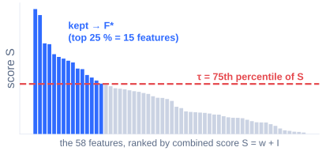
Why shrink? Fewer features → faster, less overfitting, and the model stays interpretable. Why re-select later? The best clues change when attackers change tactics — that’s the “adaptive” part.
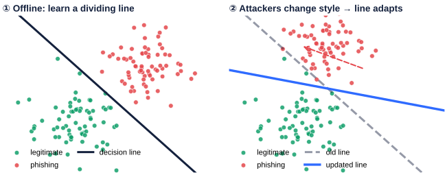
Stochastic Gradient Descent learns from small chunks of data. Think of it as reading one new page instead of re-reading the whole library. That’s what makes partial_fit on a 500-URL mini-batch possible.
Offline: fit once on old labelled URLs (batch).
Online: same model keeps updating on each new mini-batch.
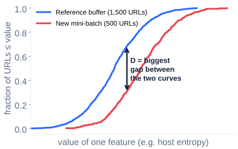
Rolling buffer of the last 1,500 labelled URLs.
New batch of B = 500 URLs vs. the buffer, one KS test per feature.
“If the two samples came from the same source, a gap this big would be < 5 % likely.”
Paper doesn’t say how per-feature alarms become one drift event. Our rule: drift event when ≥ 25 % of the active features F* fail the KS test.
framework.py, dynamic.py)It’s the honest way to measure a streaming model: every URL is scored by a model that has not seen it yet (prequential evaluation).
25 % trigger · history weight 0.5 · 3 replay epochs · inputs clipped to ±10 · classifier kept in full 58-feature space with F* as a mask.
| Corpus | URLs | Role |
|---|---|---|
| PhiUSIIL | 235k | paper’s largest corpus (Table 7) |
| Kaggle | 21k | balanced subset (Table 6) |
| ISCX-URL-2016 | 15.4k | authors’ 79 pre-computed features only (Table 5) |
| Hannousse 2021 | 11.4k | raw URLs, used in place of ISCX where strings are needed |
| Combined | 263k | PhiUSIIL + Kaggle + Hannousse, de-duplicated |
| PhishTank stream | 12,888 | live verified phishing, Jun 2024 – Jan 2025 (paper’s window), chronological, + equal held-out benign |
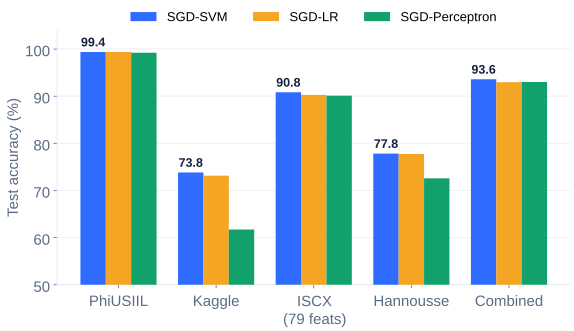
| Corpus | Ours | Paper | |
|---|---|---|---|
| PhiUSIIL (T7) | 99.38 | 98.78 | ✓ |
| ISCX (T5) | 90.83 | 99.02 | ≈ |
| Kaggle (T6) | 73.81 | 99.00 | ≈ |
| Combined (F6) | 93.58 | 99.85 | ≈ |
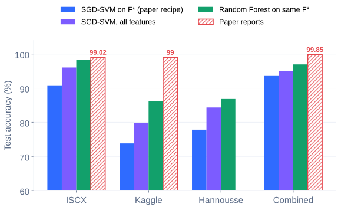
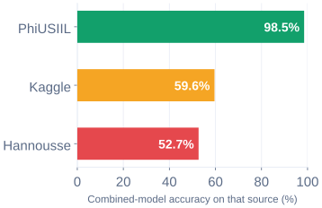
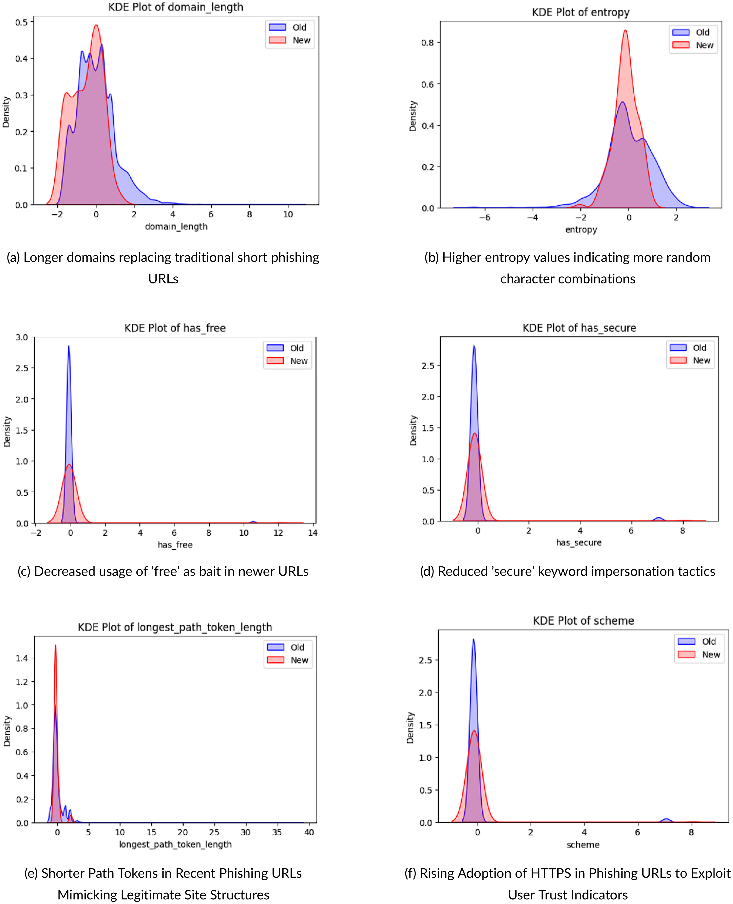
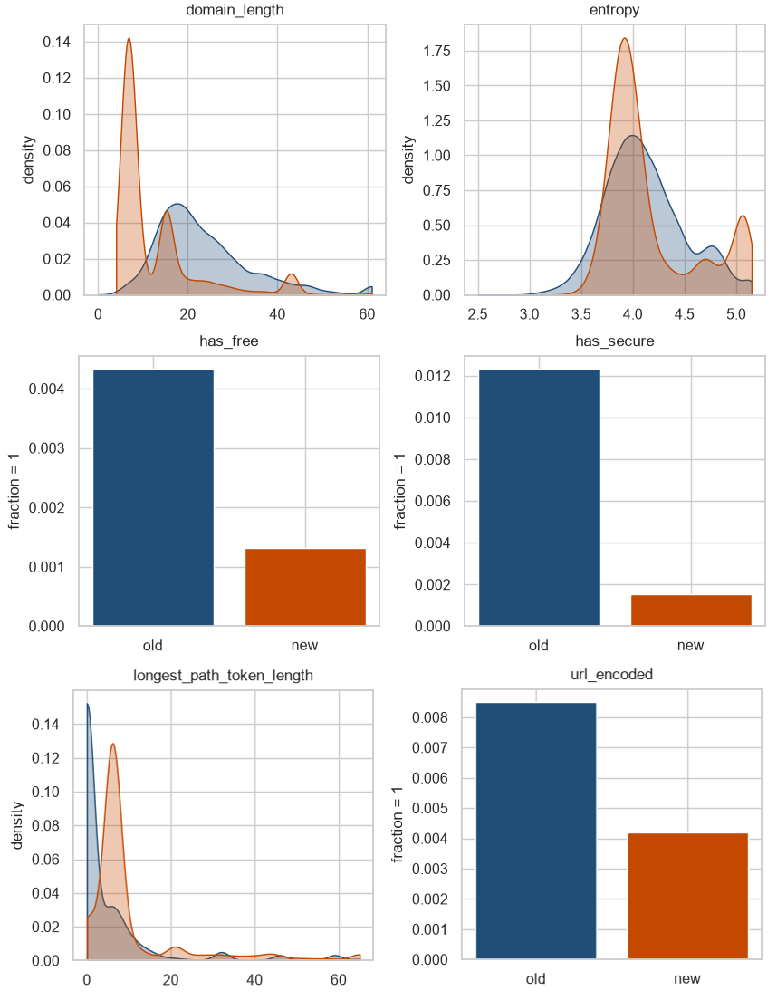
has_free, has_secure are rarer in new URLs.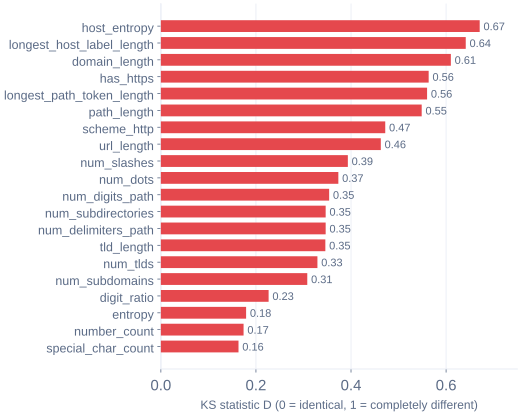
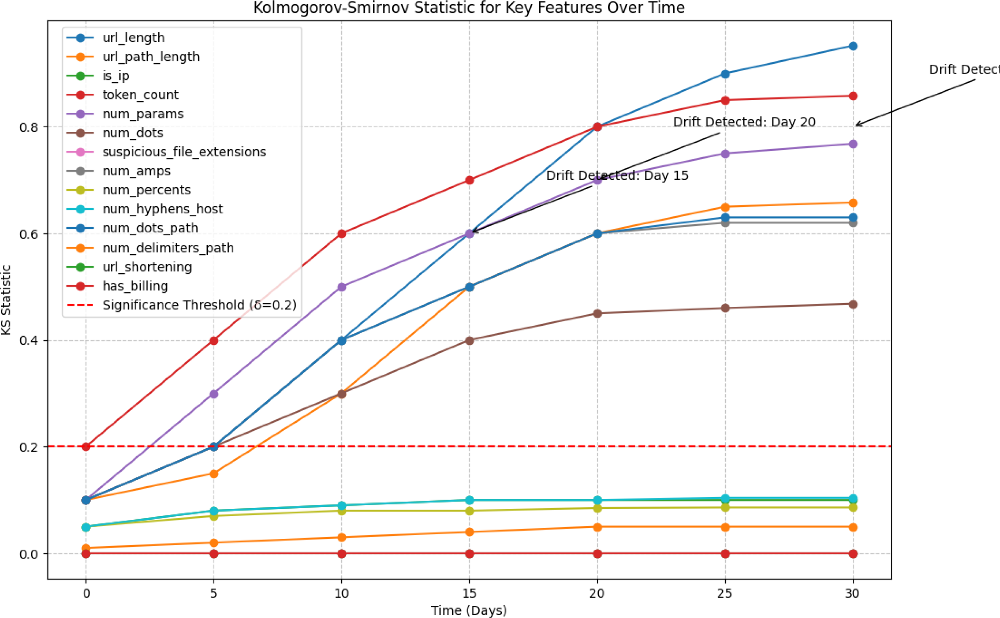
Host-name randomness becomes a key clue.
Query-string symbols (&) start to matter.
Digits inside the query replace the symbol count.
Each drift event swaps a few features: + new clue in, old clue out. In our run the set moves toward host-name randomness and query-string features — consistent with the paper’s story that newer phishing relies on query obfuscation.
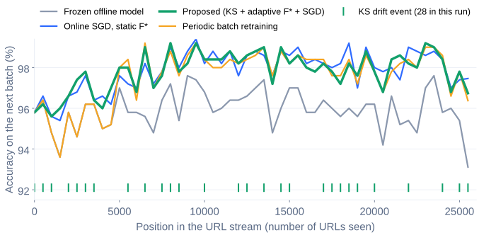
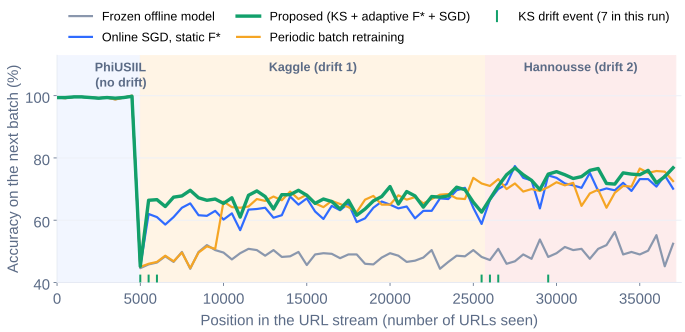
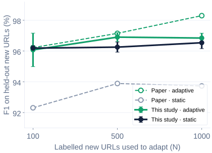
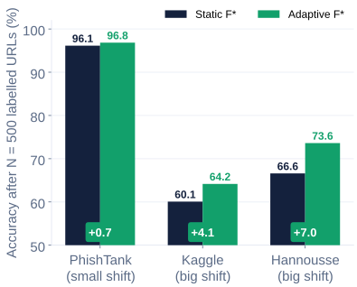
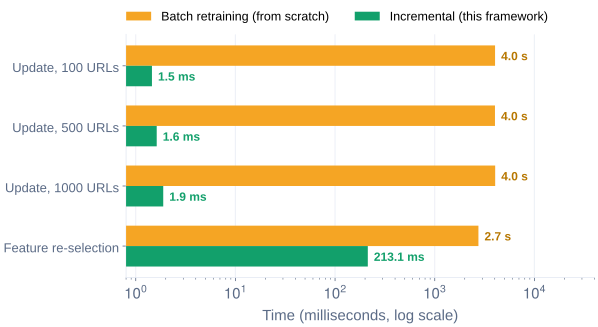
| Paper claim / experiment | Our result | Status |
|---|---|---|
| SGD-SVM is the best of the three SGD variants (T5–7, F6) | best / tied on all 5 corpora | ✓ reproduced |
| PhiUSIIL accuracy (T7: 98.78 %) | 99.38 %, precision 99.99 %, FPR 0.004 % | ✓ reproduced |
| URL feature distributions drift between old and new (F4, F7) | 34 / 58 features drift (KS, δ = 0.05); same feature families | ✓ reproduced |
| Selected feature set evolves after drift (T8) | additions / removals logged at every drift event | ✓ reproduced |
| Online learning beats a frozen model | +5.1 pts (PhishTank), +15.0 pts (cross-corpus) | ✓ reproduced |
| Adaptive features raise F1 (T9: 96.22 / 97.15 / 98.30) | 96.08 / 96.90 / 96.85 — gain clearest under big shifts | ✓ close |
| Incremental update ≪ batch retraining (T11: 15.9–33.7×) | 2,140–2,770× (update), 12.9× (features) | ✓ reproduced |
| Real-time per-URL latency (T10: 12.4–15.2 ms) | 0.16 ms | ✓ real-time |
| ≈ 99 % accuracy on ISCX / Kaggle / combined (T5, T6, F6: 99.85 %, FPR 0.067 %) | 90.8 % / 73.8 % / 93.6 % (FPR 6.2 %) | ≈ lower level |
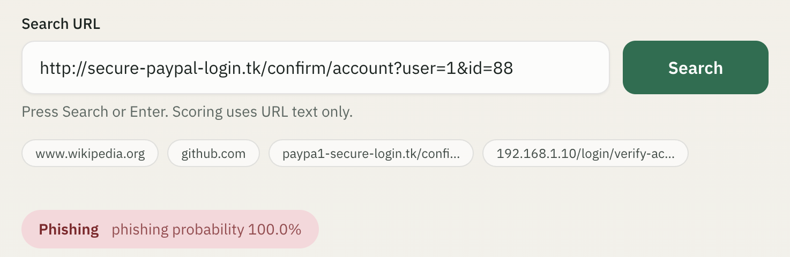
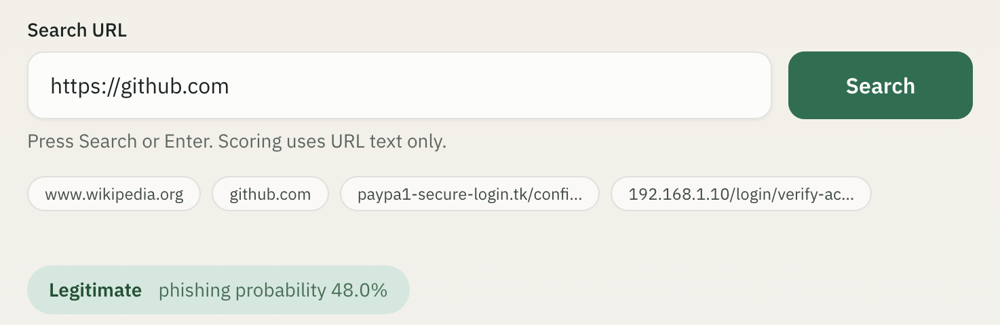
model.json.Source_Code/web/ (Next.js). The URL text never leaves your machine.
Source_Code/ · Results: Experimental_Results/ · Demo: Source_Code/web/w, mi = _score(X, y) | Lasso(α=1e-4, 1000 it.) + mutual_info_classif on standardised X |
S = w + mi | fit() — initial F* |
ks_2samp | KSDriftMonitor.test() per feature |
np.percentile(S, 75) | _apply_threshold() |
history_ | update(): S = 0.5·S_new + 0.5·S_prev |
| obsolete / added | returned by update() → logged as Table 8 |
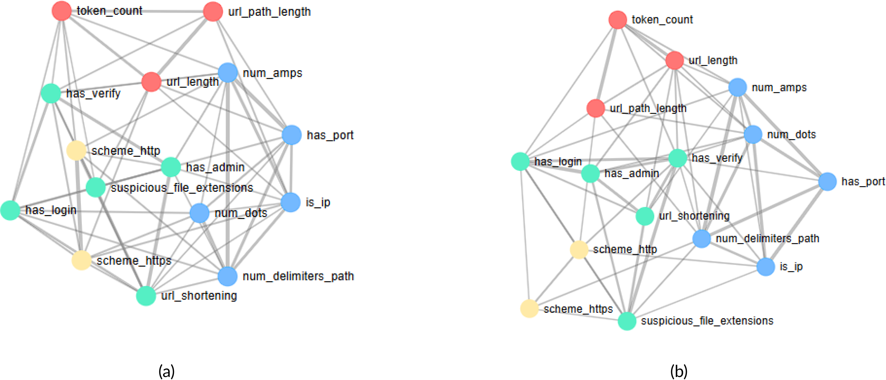
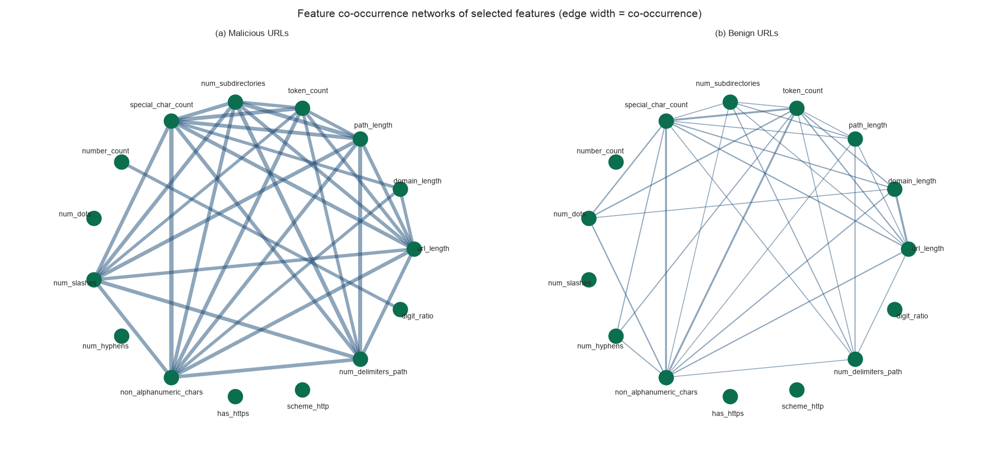
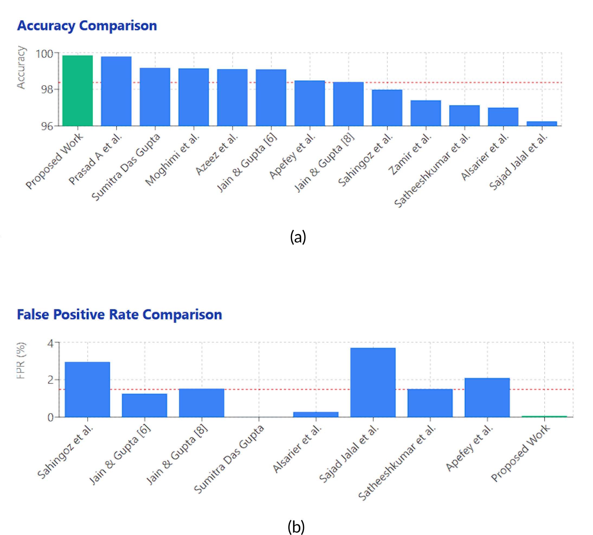
Highest accuracy (99.85 %) and lowest FPR (0.067 %) among 12 published methods — while using only URL strings and updating online.
We did not re-run the other 12 methods. On our data, a batch random forest on the same features beats SGD-SVM offline (e.g. 98.3 % vs 90.8 % on ISCX) — the paper’s advantage is adaptivity and cost, not raw offline accuracy.